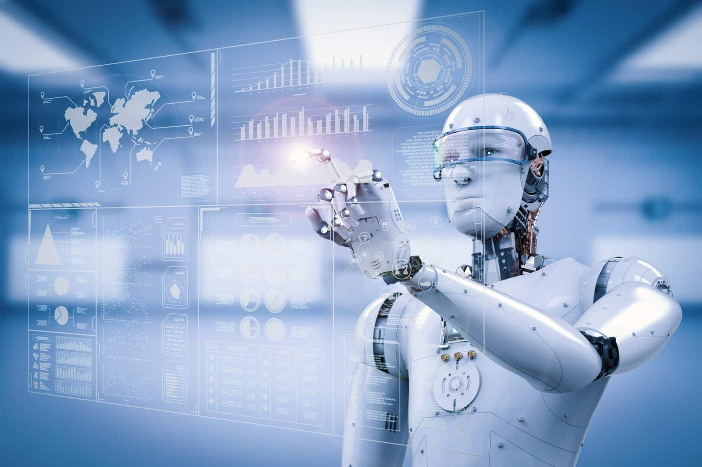

A Inteligência Artificial (IA) é um ramo da ciência da computação que desenvolve sistemas capazes de executar tarefas que normalmente exigiriam inteligência humana. Essas tarefas incluem aprender com experiências, reconhecer padrões, compreender a linguagem, resolver problemas, tomar decisões com base em dados e até criar novos conteúdos. Em vez de apenas seguir instruções fixas, muitas IAs modernas conseguem analisar grandes quantidades de informações, identificar relações entre elas e gerar respostas ou previsões cada vez mais precisas.
O conceito de IA surgiu com a ideia de construir máquinas que simulassem algumas capacidades cognitivas humanas. Com o avanço da tecnologia, especialmente do aumento da capacidade de processamento dos computadores e da disponibilidade de grandes volumes de dados, a Inteligência Artificial passou a evoluir rapidamente. Atualmente, ela é utilizada em praticamente todos os setores da sociedade, desde a saúde até a indústria, passando pela educação, finanças, entretenimento, segurança, agricultura e administração pública.
Uma das principais áreas da IA é o aprendizado de máquina, conhecido como Machine Learning. Nessa abordagem, o sistema aprende por meio da análise de dados, sem que seja necessário programar cada regra individualmente. Quanto maior a quantidade e a qualidade dos dados disponíveis, melhores tendem a ser os resultados obtidos. Uma evolução desse conceito é o Deep Learning (aprendizado profundo), que utiliza redes neurais artificiais inspiradas no funcionamento do cérebro humano para resolver problemas muito complexos, como reconhecimento de voz, identificação de objetos em imagens e tradução automática.
Nos últimos anos, ganhou destaque a chamada IA generativa, que é capaz de criar conteúdos inéditos a partir de comandos fornecidos pelos usuários. Esse tipo de inteligência artificial consegue escrever textos, gerar imagens, produzir músicas, criar vídeos, desenvolver códigos de programação, elaborar apresentações, sintetizar vozes e até combinar diferentes tipos de mídia em uma única resposta. Ferramentas como assistentes virtuais baseados em linguagem natural representam essa nova geração de IA, tornando possível uma interação muito mais próxima da comunicação humana.
Atualmente, as atividades que uma Inteligência Artificial pode realizar são extremamente variadas. Na produção de textos, ela consegue escrever artigos, livros, relatórios, e-mails, contratos, resumos, redações, roteiros, notícias, descrições de produtos, campanhas publicitárias e materiais educacionais. Também pode revisar gramática, corrigir ortografia, melhorar a clareza de um texto e traduzir conteúdos entre diversos idiomas.
Na área da programação, a IA pode desenvolver códigos em diferentes linguagens, explicar algoritmos, identificar erros, sugerir melhorias, criar aplicativos, desenvolver sites, construir APIs, automatizar tarefas repetitivas e auxiliar no aprendizado de programação. Muitos desenvolvedores já utilizam IA como uma ferramenta para aumentar sua produtividade.
A Inteligência Artificial desperta muita curiosidade não apenas pelo que consegue fazer, mas também pela enorme infraestrutura necessária para funcionar. Embora muitas pessoas imaginem que uma IA "pensa" como um ser humano, na realidade ela realiza bilhões de cálculos matemáticos em pouquíssimos segundos. A seguir estão algumas curiosidades interessantes sobre essa tecnologia. Uma das maiores curiosidades é que uma IA não possui consciência, sentimentos ou opiniões próprias. Ela não entende o mundo da mesma forma que um ser humano. Quando responde a uma pergunta, ela analisa padrões aprendidos durante o treinamento e calcula qual é a resposta mais provável para aquele contexto. Outra curiosidade é que treinar um modelo moderno de Inteligência Artificial pode levar semanas ou até meses. Durante esse período, milhares de computadores trabalham simultaneamente processando trilhões de palavras, imagens, sons e outros tipos de dados. Esse treinamento exige uma quantidade gigantesca de energia elétrica e equipamentos especializados. Os modelos mais avançados do mundo são treinados em grandes data centers. Um data center é um enorme conjunto de servidores, computadores de alto desempenho, sistemas de armazenamento e equipamentos de rede que trabalham juntos para fornecer capacidade de processamento. Em vez de um único computador poderoso, existem milhares ou até centenas de milhares de máquinas funcionando em paralelo. Dentro desses data centers, os servidores são organizados em racks, que são estruturas metálicas semelhantes a armários. Cada rack pode conter dezenas de servidores, e um único prédio pode abrigar milhares desses racks. Todos são conectados por redes de altíssima velocidade para trocar informações rapidamente. Uma curiosidade impressionante é que muitos data centers utilizam principalmente GPUs (Unidades de Processamento Gráfico), e não apenas CPUs tradicionais. As GPUs foram criadas originalmente para jogos, mas se mostraram muito mais eficientes para realizar milhões de cálculos simultaneamente, algo essencial para o treinamento e funcionamento das IAs modernas. O processamento acontece de forma distribuída. Quando um usuário envia uma pergunta para uma IA, essa solicitação é encaminhada para servidores que dividem o trabalho entre diversos processadores. Em frações de segundo, bilhões de operações matemáticas são realizadas para calcular a resposta mais adequada. Em seguida, essa resposta retorna ao usuário pela internet.
